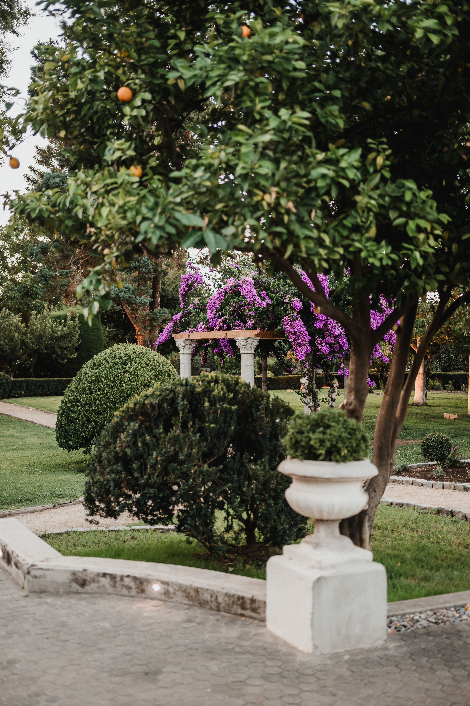

Quiénes somos
Casona Fundo El Castillo nace del sueño familiar de devolverle vida a un parque con más de 80 años de historia. Diseñado por un paisajista francés y rodeado de árboles centenarios, este lugar único combina patrimonio, naturaleza y elegancia. Nuestra antigua casona ha sido cuidadosamente restaurada, integrando modernos baños y una cocina de más de 300 m², creando el escenario perfecto para eventos inolvidables.